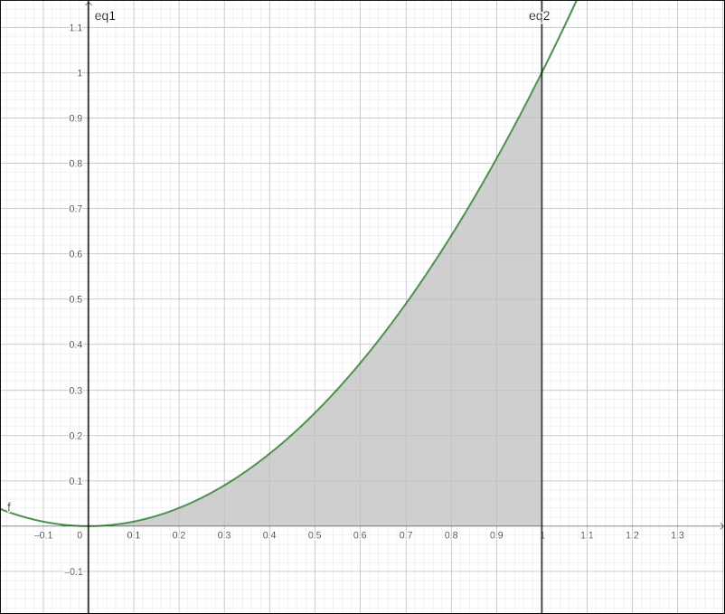
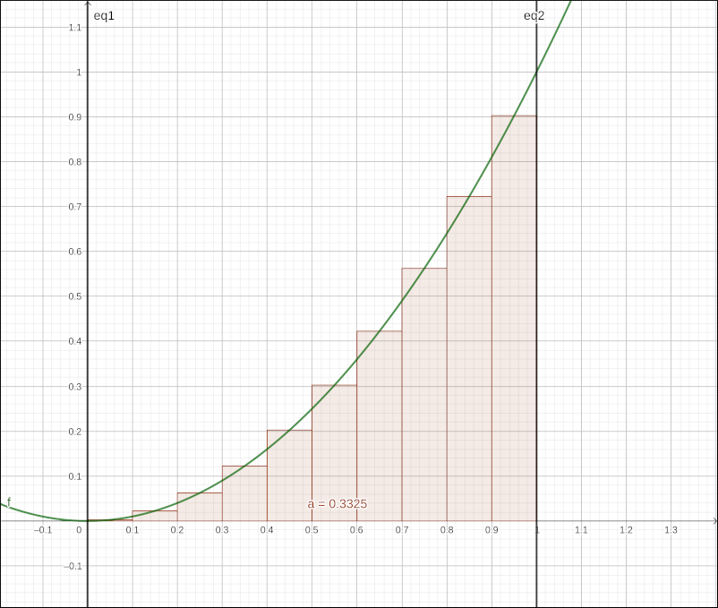
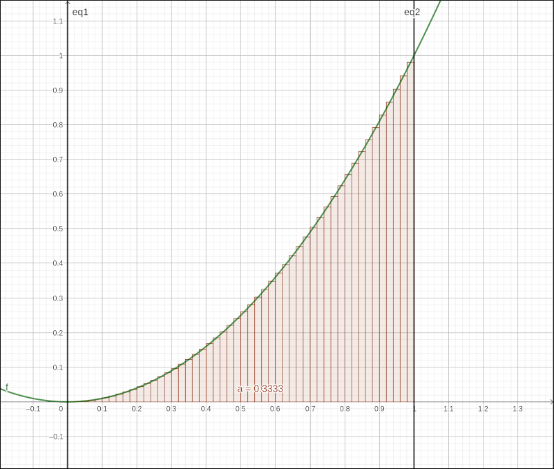
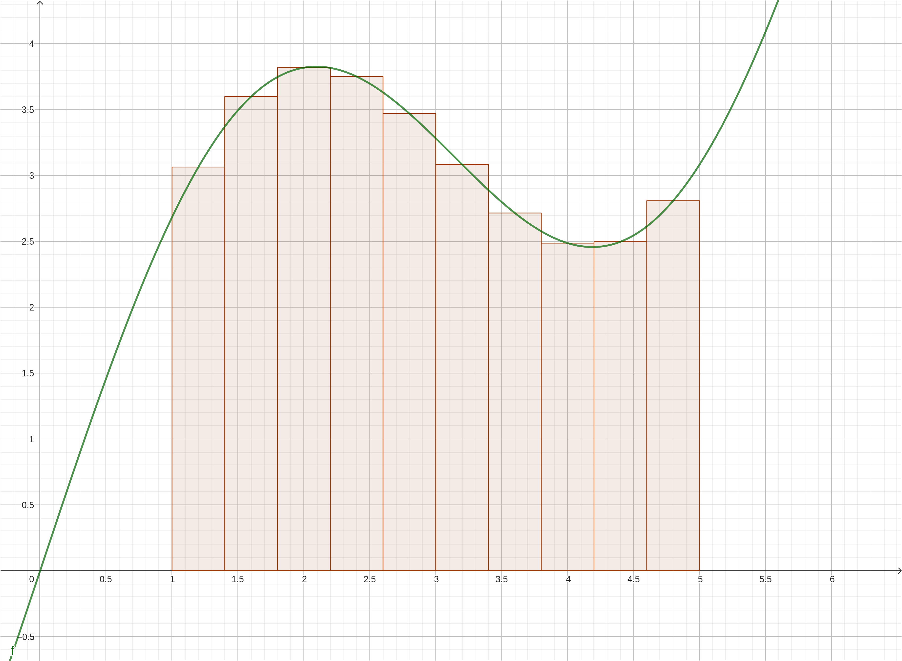

Introduction#
To the Reader#
Welcome, whether you are using these tutorials as part of a course or just using them on your own to learn Calculus, I hope you find them beneficial.
About these Tutorials#
This set of tutorials and examples was developed as a supplement to a STEM college-level sequence in Calculus to use computer algebra system and graphing technology to visualize and explore concepts in these courses. Although these tutorials are geared toward a STEM Calculus sequence they are certainly useful for a course or sequence in applied calculus, the instructor and student will simply need to pick and choose the sections they utilize. The tutorials were not designed to accompany any particular textbook but be general enough to use with a multitude of texts. With that said, I would highly recommend Calculus Volume 1, 2, and 3 by Gilbert Strang and Edwin “Jed” Herman from OpenStax, https://openstax.org. This is an excellent series of books for a STEM college-level sequence in Calculus and has inspired much of the content and organization of this set of tutorials. Even if you are taking a course at a university and have a course text these textbooks are a great supplementary reference.
There are many different styles of Calculus textbooks on the market, the layout of these tutorials is fairly traditional and loosely follow the style of Anton, Stewart, Thomas, and Strang, as well as a host of others too numerous to list. Even if you are not using a traditional style textbook you can still use these tutorials, you just may need to jump around the sections a little more.
These tutorials focus on the use of technology to help with the calculations and visualizations of the topics in Calculus. The tutorials do discuss the mathematics of the topic but were written more as a summary of the mathematics. For a detailed discussion of these topics and proofs of the results you should consult your textbook.
These tutorials utilize three open-source software packages, GeoGebra, Maxima, and CLAE (Calculus and Linear Algebra Explorer), the links to download these packages are below. Not all topics use each of these packages, but they use at least one of them. There are quick start guides for GeoGebra and Maxima in these tutorials as well as the entire help system for CLAE. More information on GeoGebra and Maxima can be found easily online, both have extensive communities of educators using these packages.
The tutorials themselves are distributed as a self-contained website that can be run from any web server and locally on your personal computer even without an internet connection. Simply open the main page in your favorite browser.
The images in these tutorials were mostly created by me with the software packages being utilized. Those that were not created by me were taken primarily from the open-source textbooks by by Gilbert Strang and Edwin “Jed” Herman and a few were taken from the internet that appeared to be public domain.
- The goals of these tutorials are:
Provide a technology guide for the user to better understand Calculus concepts.
Give the user step-by-step instructions on how to use the software packages to lessen the learning curve and provide an example-oriented approach instead of a general functional approach.
Give the user enough foundational skills with the technology so that they can use it for more advanced investigations and projects.
Tutorial Organization#
These tutorials are organized into three main parts, Differential Calculus, Integral Calculus, and Multivariable Calculus, which roughly corresponds to a Calculus I, II, and III sequence at most institutions. This makes it easier to compartmentalize the topics and navigate the site. Each part is divided into specific topics that can be selected in the left hand window. Once a topic is selected the tutorial will be in the center window and a page navigation for that topic is displayed on the right.
In these tutorials and examples you will concentrate on the Tangent Problem. Specifically you will be investigating limits, continuity, derivatives, and their applications.
In these tutorials and examples you will concentrate on the Area Problem. Specifically you will be investigating integration, techniques of integration, applications of the integral, infinite sequences and series, power series; Taylor and Maclaurin series, parametric curves, and polar coordinates.
In these tutorials and examples you will take the Tangent Problem and the Area Problem to a higher dimension. Specifically you will be investigating calculus applied to functions of several variables. Topics here include vectors and vector valued functions, multivariable functions and partial derivatives, multiple integrals, and concepts from vector calculus.
How to Use these Tutorials#
Here is my suggestion on how you use these tutorials. First read your textbook on the topic, work through the textbook examples and try some of the exercises. Then go into these tutorials and select the topic you are working on, read through the discussions, and then work through the examples using the technology you have chosen. Then go back to the exercises in your text and use the technology to help visualize the conditions of the exercise and possibly help with the calculations of the more difficult exercises. In addition, if your textbook does not give you graphs of the functions in an example, use the technology to do so. It may make the example clearer.
Software#
These tutorials were designed to use computer algebra system and graphing technology to help explore the concepts in Calculus. There are many such systems that are available either online or for download and local installation. We will using three that are all cross-platform, open-source, and freely available on the web, GeoGebra, Maxima (specifically wxMaxima), and CLAE (Calculus and Linear Algebra Explorer). It is not assumed that the user is using all three of these, just one or more. The examples in the tutorials have subsections on how to use each one (or a combination) for that example. Not all examples will use each of these packages, in some applications one or more may prove to be too cumbersome, and hence omitted.
No single software package is perfect, if there was we would use it. A software package is simply a tool. Every tool has a set of things it is useful for and a set of things it is not useful for. A hammer is very good at driving nails but not so great at cutting a piece of wood. The same is true for software packages. We selected GeoGebra, Maxima, and CLAE since they were all cross-platform, open-source (hence free), and they complement each other in facilities, ease of use, and strengths. It is simply like having a toolbox of different tools.
These tutorials will take the user step-by-step through the calculation and visualization commands and options in the software packages but they do not discuss the general features of the software. There are some quick user’s guides included in these tutorials to get you started. Both GeoGebra and wxMaxima have a long development history and there are numerous resources on the web on their commands and general use. CLAE is a new package that has a fairly extensive help system that discusses the features of the software.
Download GeoGebra or use Online
GeoGebra is a dynamic mathematics software for all levels of education that brings together geometry, algebra, spreadsheets, graphing, statistics and calculus in one engine. In addition, GeoGebra offers an online platform with over 1 million free classroom resources created by our multilingual community. These resources can be easily shared through our collaboration platform GeoGebra Classroom where student progress can be monitored in real time.
wxMaxima is a document based interface for the computer algebra system Maxima. wxMaxima provides menus and dialogs for many common maxima commands, autocompletion, inline plots and simple animations. wxMaxima is distributed under the GPL license.
CLAE (Calculus and Linear Algebra Explorer) was developed for quick calculations and explorations in an introductory STEM mathematics classes, primarily single variable and multi-variable Calculus and Linear Algebra. It combines the SymPy computer algebra system with the PyQtGraph two and three dimensional graphics interfaces in a primarily menu-driven user interface. It keeps the syntax to a minimum in hopes of making the learning curve as shallow as possible while maintaining the power of more general computer algebra systems.
Calculus#
In a nutshell, Calculus is the study and quantifying of change. If we have two quantities that are related in a way such that the change in one creates a change in the other, there are two main questions we can ask. The first question is, what is the rate at which the dependent quantity changes as we change the independent quantity? The second question is, what is the total change of the dependent quantity as we change the independent quantity over some interval of values?
We tend to interpret this study and quantifying of change into two graphically oriented interpretations, the Tangent Problem and the Area Problem. The Tangent Problem answers the first question, “What is the rate at which the dependent quantity changes as we change the independent quantity?” which is at the heart of Differential Calculus. The Area Problem answers the second question, “What is the total change of the dependent quantity as we change the independent quantity over some interval of values?” which is at the heart of Integral Calculus.
The Tangent Problem#
The Statement of The Tangent Problem#
The statement of The Tangent Problem is very simple. Given a curve and a point on the curve find the slope of the tangent line to the curve at the given point. Graphically, in the image below find the slope of the red line.

Tangent Problem Visualization#
Solving The Tangent Problem#
Solving The Tangent Problem seems fairly easy as well, if we had the equation of the tangent line, say \(y = mx+b\) then the slope is just \(m\). If we had two points on the line, say \((x_1, y_1)\) and \((x_2, y_2)\) then we could calculate the slope as \(m = \frac{y_2-y_1}{x_2-x_1}\). The problem is that we don’t have either, we have only one point on the line so the slope calculation is out, and we don’t have an equation for the line, so manipulating it into slope-intercept form and reading off the slope is out as well. Another alternative is that we can calculate the equation of a line if we had a single point on the line (which we do) and the slope of the line (which we don’t), that is what we are looking for in the first place. Hence, we need to take a different approach.
The big problem here is that we only have one point on the line, if we had two points on the line we could calculate the slope of the line. So as with many processes in mathematics we will approximate what we want with something we can calculate. Take two points on the curve and draw a line between them. This line will have two points and hence we can calculate the slope of the line. For example,

Tangent Line and Secant Line to the Curve#
The green line is our approximation of the tangent line. Since it is drawn between two points on the curve we call it a secant line to the curve. This example is using the function \(f(x) = x^{3} - 3 x^{2} + x + 1\) but that is not important here, the same would be done for any function. The slope of this secant line is 4.04, as can be seen in the legend of the plot. Obviously the secant line here is not a very good approximation of the tangent line, so we will move the second point closer to the first point. Now the slope of the secant line is 2.75 and the secant line is a closer approximation to the tangent line.

Secant Line Approaching the Tangent Line#
Move the second point closer to the first point. Now the slope of the secant line is 1.64 and the secant line is a closer approximation to the tangent line.

Secant Line Approaching the Tangent Line#
Move the second point closer to the first point. Now the slope of the secant line is 1.31 and the secant line is a closer approximation to the tangent line.

Secant Line Approaching the Tangent Line#
Move the second point closer to the first point. Now the slope of the secant line is 1.1525 and the secant line is a closer approximation to the tangent line.

Secant Line Approaching the Tangent Line#
Move the second point closer to the first point. Now the slope of the secant line is 1.0604 and the secant line is a closer approximation to the tangent line.

Secant Line Approaching the Tangent Line#
Move the second point closer to the first point. Now the slope of the secant line is 1.01503 and the secant line is a closer approximation to the tangent line.

Secant Line Approaching the Tangent Line#
Move the second point closer to the first point. Now the slope of the secant line is 1.006 and the secant line is a closer approximation to the tangent line.

Secant Line Approaching the Tangent Line#
Move the second point closer to the first point. Now the slope of the secant line is 1.003 and the secant line is a closer approximation to the tangent line.

Secant Line Approaching the Tangent Line#
Move the second point closer to the first point. Now the slope of the secant line is 1.0003 and the secant line is a closer approximation to the tangent line.

Secant Line Approaching the Tangent Line#
The final secant line we used is very close to the tangent line and our sequence of secant line slopes, 2.75, 1,64, 1.31, 1.1525, 1.0604, 1.01503, 1.006, 1.003, 1.0003 seem to be converging to 1. So we would say that the slope of this tangent line is 1.
Now let’s look at this process in more generality, let’s say we have a generic function \(f(x)\) and a point on the curve. The point on the curve is the red point, that is the point of interest, say it is at \(x = a\), hence the coordinates of the red point are \((a, f(a))\). The green point is the second point on the curve to create the secant line so that we can calculate a slope, we will keep its general, \((x, f(x))\).

Tangent Line Slope Derivation#
Now the slope of the green secant line is,
Since a is a constant we can take any value of x that is not equal to a and calculate a slope of the secant line. What we did in the example above was to get better and better approximations to the slope of the tangent line by taking values of x closer and closer to a, that is, we let x approach a, written as \(x \to a\). In Calculus, when we let one quantity get closer to another without equaling it we call that a limit, which we will formally discuss in later sections. Mathematically we write this as,
and it is how we define the slope of the tangent line to a function. An equivalent formulation that is sometimes easier to calculate is if we let \(h = x-a\) then \(x = a + h\) and letting \(x \to a\) is the same thing as letting \(h \to 0\), our formula becomes,
So once we establish some details on the limit we can algebraically calculate the slope of a tangent line.
An Example of The Tangent Problem#
This is all well and good, but you know there is something missing here. Finding the slope of a tangent line to a curve is a nice academic exercise, but we would not center an entire area of mathematics around it if there were not numerous applications to this process. We will start out with an example to help us move into a more general framework. The graph below represents the distance a person riding a motor-scooter is from their starting point. The horizontal axis is time in hours and the vertical axis is distance in tens of miles.

Distance Verses Time Graph of the Position of a Person on a Motor-Scooter#
So at time zero they get on their motor-scooter at home and the distance they are away from home is 0. They travel for an hour and they are about 27 miles away from home. Two hours into the trip they are about 38 miles away from home. A little over two hours into the trip they turn onto another road that circles back closer to home. At about 4.25 hours that turn onto another road that again takes them further away from home, and so on.
Let’s put in a tangent line at one hour and a secant line from one hour to about 2.25 hours.

Average Velocity and Instantaneous Velocity#
The slope of the secant line is
The units for the y values are miles and the units for the x values are hours so the ratio is miles/hour and hence a velocity. So the slope of a secant line is representing the average velocity of the motor-scooter from 1 hour to 2.25 hours into the trip. As we let the second point approach the first we get average velocities of the motor-scooter on smaller time intervals. In the limit, we get a velocity over an infinitesimal time period or better yet at an instance in time, this is the slope of the tangent line which is the instantaneous velocity of the motor-scooter at one hour into the trip.
What Does The Tangent Problem Mean in General#
Let’s take the previous example one step further. In the previous example our slopes were velocities. A velocity is a rate of change of distance with respect to time. The distance was our y variable and our time was the x variable. The y variable is our dependent variable and our x variable is our independent variable. Variables represent quantities, in many cases physical quantities. Obviously there is a relationship between the x and y variables, in the above example it was the motor-scooter. So if we have a relationship between two quantities, one is an independent quantity and the other is a dependent quantity (dependent on the value of the independent quantity) then the slope of the slopes of the secant lines are average rates of change of the dependent quantity with respect to the dependent quantity and the slope of the tangent line is the instantaneous rate of change of the dependent quantity with respect to the independent quantity.
Say we know the velocities of a rocket during its flight, then the slope of the tangent line represents the rate at which the velocities are changing, that is, its acceleration.
Say we know the relationship between how many items a company produces and the revenue it gets from the sale of those items. Then the slope of the tangent line represents the rate at which the revenue is changing (up or down) for a particular number of items created and sold.
Say we know amount of water being pumped into a pool over time, then the slope of the tangent line would be the pumping capacity (gal/min) of the pump.
The list goes on and on…
The Area Problem#
The Statement of The Area Problem#
Just like the Tangent Problem, the Area Problem is easy to state. The goal here is to calculate the area under a curve between two x values. For example, say we wanted to calculate the area under the curve \(y = x^2\) with x ranging over the interval \([0, 1]\). A graph of this is below with the area of interest shaded.

Area Problem Visualization#
Solving The Area Problem#
For example, say we wanted to calculate the area under the curve \(y = x^2\) with x ranging over the interval \([0, 1]\). A graph of this is below with the area of interest shaded.
Area Under the Curve \(y = x^2\) on \([0, 1]\)#
Although we will be using a specific example here the general situation is exactly the same. If this were a nice geometric object like a rectangle, triangle, trapezoid, or even a regular polygon we could apply a formula to it and have our area. Since it is not a nice geometric object we will take a similar approach as we did with the Tangent Problem. With the tangent problem we approximated what we wanted using objects (secant lines) that we could calculate the slope of then we let the secant lines approach the tangent line thus having the slopes of the secant lines approach the slope of the tangent line, which was our goal. Here we will approximate the area under the curve using nice geometric objects, rectangles. We will first use 10 rectangles to approximate this area.

Area Approximation Using 10 Rectangles#
If we add up the areas of each of these rectangles we get, 0.3325 (as you can see on the image). Obviously this is not the exact area. If we look at the graph it is clear that there is some area above the curve overestimating the area and there is area under the curve that is missed and hence underestimating the area. If we increase the number of rectangles to 50 we get,

Area Approximation Using 50 Rectangles#
Adding up the areas here we get approximately 0.3333. Although this is not the exact area either, there are still extra portions above the curve and missing portions below the curve, it appears to be getting closer to the area under the curve. Finally, if we up the number of rectangles to 100, we get,
Area Approximation Using 100 Rectangles#
Giving us an approximation of 0.33333, and the appearance of a better approximation. Noticing that these approximate areas are tending to 0.33333333… we would probably take a leap of faith and say that the exact area under the curve is \(A = \frac{1}{3}\), which is correct. What is more important is that we followed the same path as we did with the tangent problem. We needed a value we could not calculate, we used an approximation to that value we could calculate, then we took the limit of the approximations to obtain the desired value. Hence, both of these problems are solved with this concept of a limit.
Let’s put a few more details in here. Start with a general function \(f(x)\) and some rectangles.

Area Derivation Visualization#
Although there are 10 rectangles in this image we will imagine a more general situation with n rectangles. We will also forget that this is on the interval \([1, 5]\) and think about it being on a general interval, \([a, b]\). We first calculate the area of a single rectangle. The width of the rectangle is the length of the interval divided by the number of rectangles, specifically the width is \(\Delta x = \frac{b-a}{n}\), since all the rectangles have the same width. The height of the rectangle is the functional value at the midpoint of each sub-interval we will call this x value \(x_i\) for the i th sub-interval. So the height is \(f(x_i)\). Hence, the area of the i th rectangle is \(f(x_i) \cdot \Delta x\). So our approximation to the area under the curve is the sum of all the rectangles, specifically,
Following our example, we got better approximations by increasing the number of rectangles, \(n\). We can do this with an infinite limit.
A couple terms before we move on. The sums of rectangle areas are called Riemann Sums and the limit of a Riemann sum is called the Definite Integral.
An Example of The Area Problem#
As an example we will go back to the familiar velocity problem, with a twist. As a visual, we will look at our example graph from above. In this case, let’s consider the vertical axis as velocity, so in miles/hour units, and we will consider the horizontal axis to be time, in hours. So the curve is representing the velocity of the car or motor-scooter or particle (doesn’t matter) at each moment during the trip. So this is essentially logging the speedometer values constantly while you are driving.
Velocity Verses Time Graph#
Each rectangle area is the height times the width, so miles/hour times hours which gives us miles. So each rectangle represents an approximation of how far the car went during the time of the sub-interval. Consequently, the Riemann sum of all the rectangles gives an approximation of the total distance traveled between times a and b.
So in the limit, we get the exact distance traveled between times a and b, that is, the change in the odometer during the trip.
What Does The Area Problem Mean in General#
Let’s take the previous example one step further. In the previous example our areas were distances. A distances is a total change of velocity with respect to time. The velocity was our y variable and our time was the x variable. The y variable is our dependent variable and our x variable is our independent variable. Variables represent quantities, in many cases physical quantities. Obviously there is a relationship between the x and y variables, in the above example it was the car or motor-scooter or whatever. So if we have a relationship between two quantities, one is an independent quantity and the other is a dependent rate quantity (dependent on the value of the independent quantity) then the Riemann sum represents an approximate total change and the limit of the Riemann sum represents the total change.
Development Tools#
This tutorial set was created using the Sphinx documentation package built with the PyData Sphinx Theme. The mathematical expressions were created with the MathJax extension to Sphinx. MathJax is included in the distribution of this tutorial so that the tutorials can be viewed completely off-line. In addition, the entire website can be run on any web server, there is no need for any server-side functionality.
Sphinx: https://www.sphinx-doc.org/
PyData Sphinx Theme: https://pydata-sphinx-theme.readthedocs.io/en/stable/index.html
MathJax: https://www.mathjax.org/